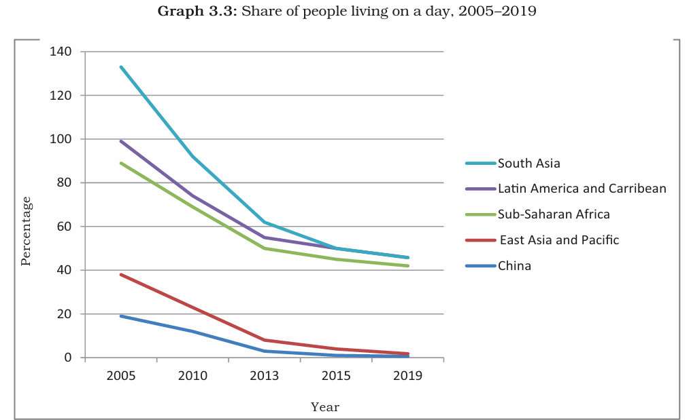
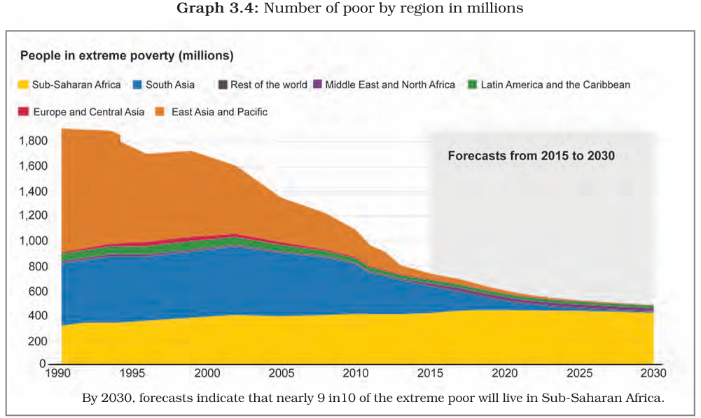
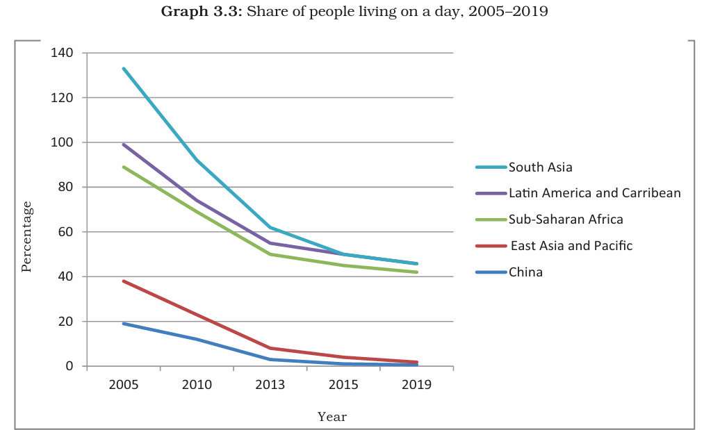
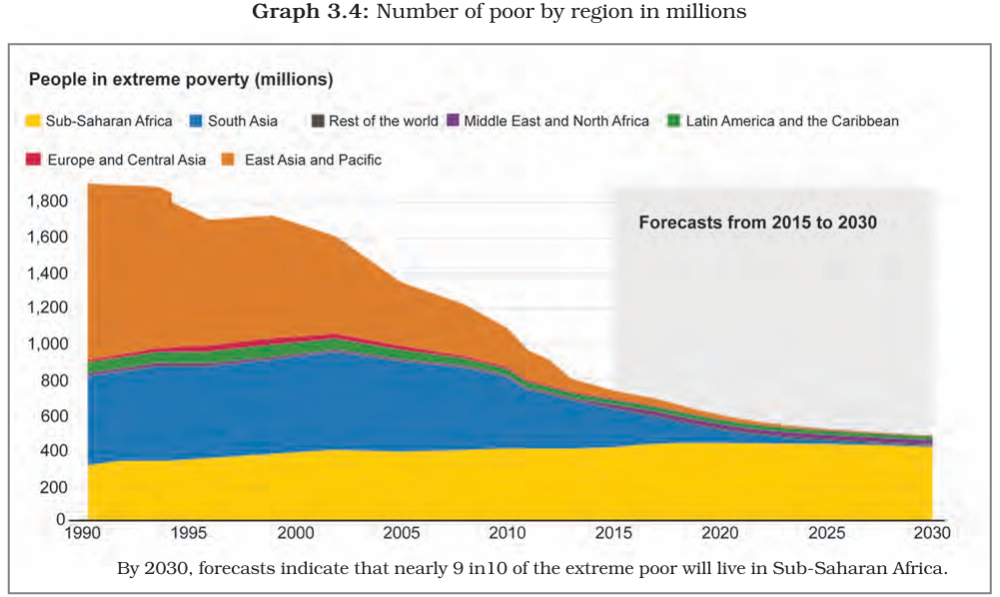

Poverty as a Challenge
Chapter 3
Interactive Edition 2025
Introduction
Click here to Start/Stop Narration
In our daily life, we come across many people who we think are poor. They could be landless labourers in villages or people living in overcrowded jhuggis in cities. NITI Aayog uses Multidimensional Poverty Index to analyse the problem of poverty faced by the country. The ratio of multidimensional poverty has fallen from approximately 55 per cent in 2005–06, 25 per cent in 2015–16 and to 15 per cent in 2019–21. It is also expected that multidimensional poverty will soon reach single digit.
Overview
Click here to Start/Stop Narration
This chapter deals with one of the challenges faced by independent India— poverty. After discussing this multi dimensional problem through examples, the chapter discusses the way poverty is analysed by social scientists. Poverty trends in India and the world are illustrated through the concept of the poverty line. Causes of poverty as well as anti-poverty measures taken by the government are also discussed. The chapter ends with broadening the official concept of poverty into human poverty.
Two Typical Cases of Poverty (Part-1)
Urban Case
Rural Case
Poverty as seen by social scientists
Social Exclusion
Vulnerability
Poverty Line
Poverty Estimates
Two Typical Cases of Poverty (Part-2)
Inter-State Disparities
Vulnerable Groups
Global Poverty Scenario
 



Poverty and Sustainable Development Goals
Causes of Poverty
Anti-Poverty Measures
The Challenges Ahead
Twelve Indicators of National
Multidimensional Poverty Index
Click here to Start/Stop Narration
NITI Aayog, a Government of India organisation evolved the National Multidimensional
Poverty Index (NMPI) using the following 12 indicators. If an individual is found
deprived on these indicators, he or she is considered as multidimensional poor.
1. Nutrition: A household is considered deprived if any child between the ages
of 0 to 59 months, or woman between the ages of 15 to 49 years, or man
between the ages of 15 to 54 years is found to be undernourished.
2. Child-Adolescent Mortality: A household is deprived if any child or adolescent
under 18 years of age has died in the household in the five-year period
preceding the survey.
3. Maternal Health: A household is deprived if any woman in the household
who has given birth in the 5 years preceding the survey has not received
assistance from trained skilled medical personnel during the recent childbirth.
4. Years of Schooling: A household is deprived if not even one member of the
household aged 10 years or older has completed six years of schooling.
5. School attendance: A household is deprived if any school-aged child is not
attending school up to the age at which he/she would complete class.
6. Cooking Fuel: A household is deprived if a household cooks with dung,
agricultural crops, shrubs, wood, charcoal, or coal.
7. Sanitation: A household is deprived if the household has unimproved or no
sanitation facility or it is improved but shared with other households.
8. Drinking Water: A household is deprived if the household does not have access
to improved drinking water or safe drinking water is at least a 30-minute
walk from home (as a round trip).
9. Housing: A household is deprived if the household has inadequate housing: the floor
is made of natural materials, or the roof or wall are made of rudimentary materials.
10. Electricity: A household is deprived if the household has no electricity.
11. Assets: A household is deprived if the household does not own more than one
of these assets: radio, TV, telephone, computer, animal cart, bicycle, motorbike,
or refrigerator; and does not own a car or truck.
12. Bank Account: A household is deprived if no household member has a bank
account or a post office account.
Summing Up
Click here to Start/Stop Narration
In this chapter, we have looked at the different approaches of measuring poverty. The National Multidimensional Poverty Index, put forward by NITI Aayog in collaboration with UNDP and Oxford Policy and Human Development Initiative reveals that on the Headcount Ratio of multidimensionally poor, there has been a considerable reduction. Even when some of the states like Kerala and Tamil Nadu have reached less than 10 per cent on the HCR front, much is yet to be achieved by the other states. However, it is also to be noted that due to the array of Government intervention policies between 2005–06 and 2019–21 there has been significant decline in the number of MPI poor in the states of Bihar, Uttar Pradesh, Madhya Pradesh and Rajasthan.
Test Yourself
Critical Thinking Questions
Answer the following questions to develop your critical thinking about poverty: